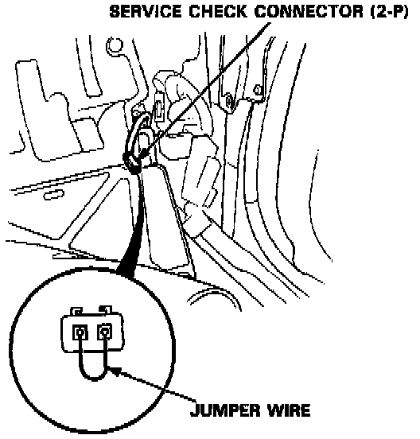
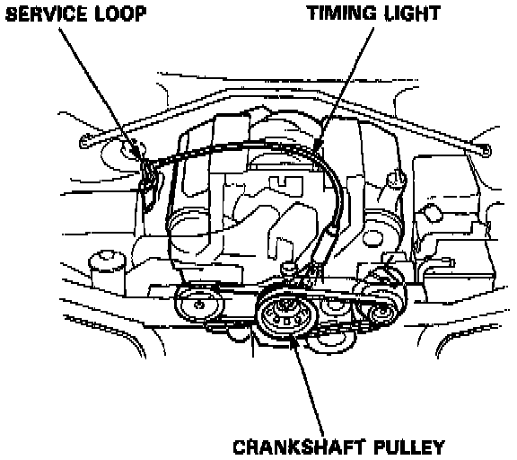
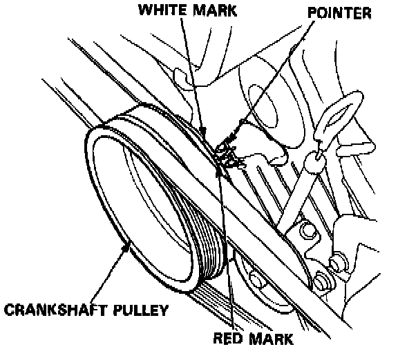
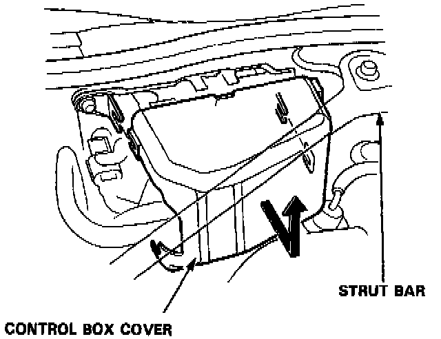
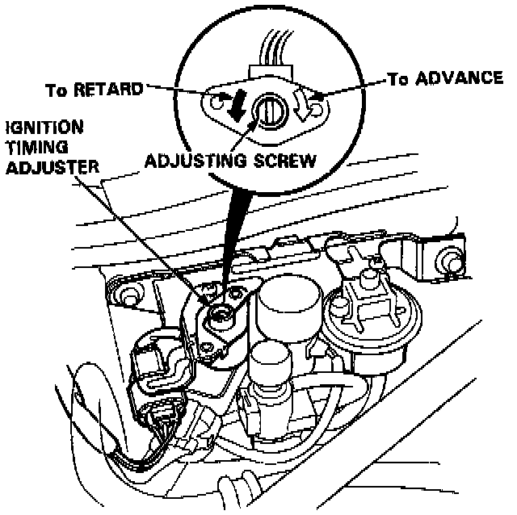

Ignition Timing: Adjustments
1. Start the engine and allow it to warm up (the radiator fan comes on).
2. Pull out the service check connector located under the dash on the right side. Connect the WHT and BLK terminals with a jumper wire.

3. Connect a timing light to the service loop; while the engine idles, point the light toward the pointer on the timing belt cover.
4. Check the idle speed.
NOTE: Adjust the idle speed, if necessary, by turning the idle adjusting screw.

5. Inspect ignition timing at idle speed.
Ignition Timing: 15° ± 2° BTDC (RED mark)
Idle speed:
650 ± 50 rpm (In Neutral)
600 ± 50 rpm (In Park or Neutral)

6. If it is necessary to adjust the ignition timing, remove the control box cover. Be careful not to damage the vacuum hoses.
7. Drill the two rivet heads off with 0.48 mm (3/16 in) drill bit, then remove the adjuster cover.
CAUTION: Do not damage the adjuster when removing the rivets.

8. Adjust the ignition timing by turning the adjusting screw on the ignition timing adjuster.
9. Reinstall the adjuster cover with new rivets, then reinstall the adjuster in the control box.
10. Remove the jumper wire from the service check connector.